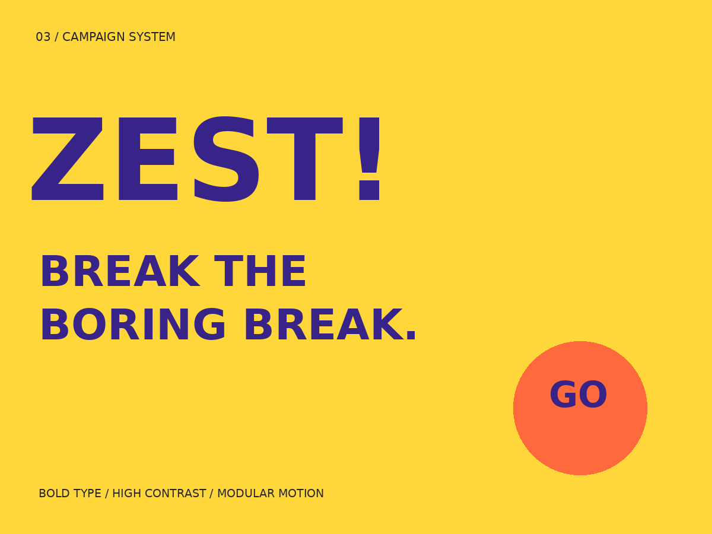
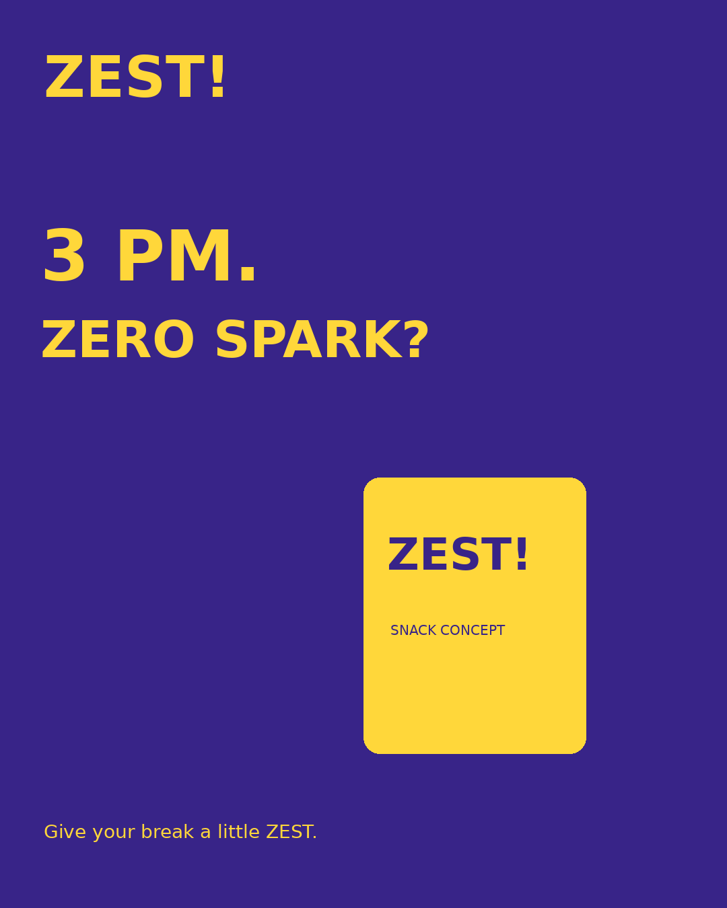
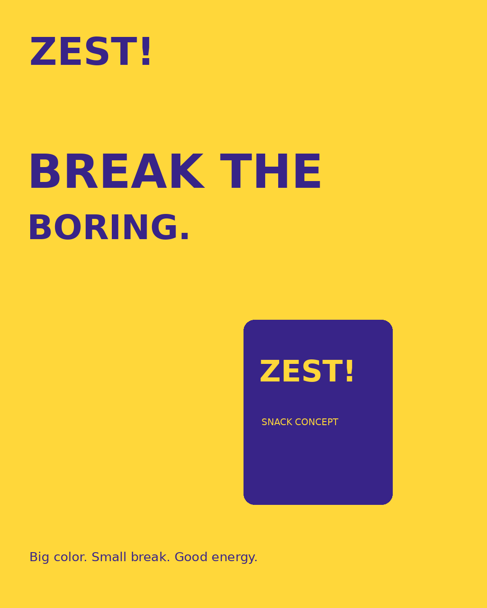
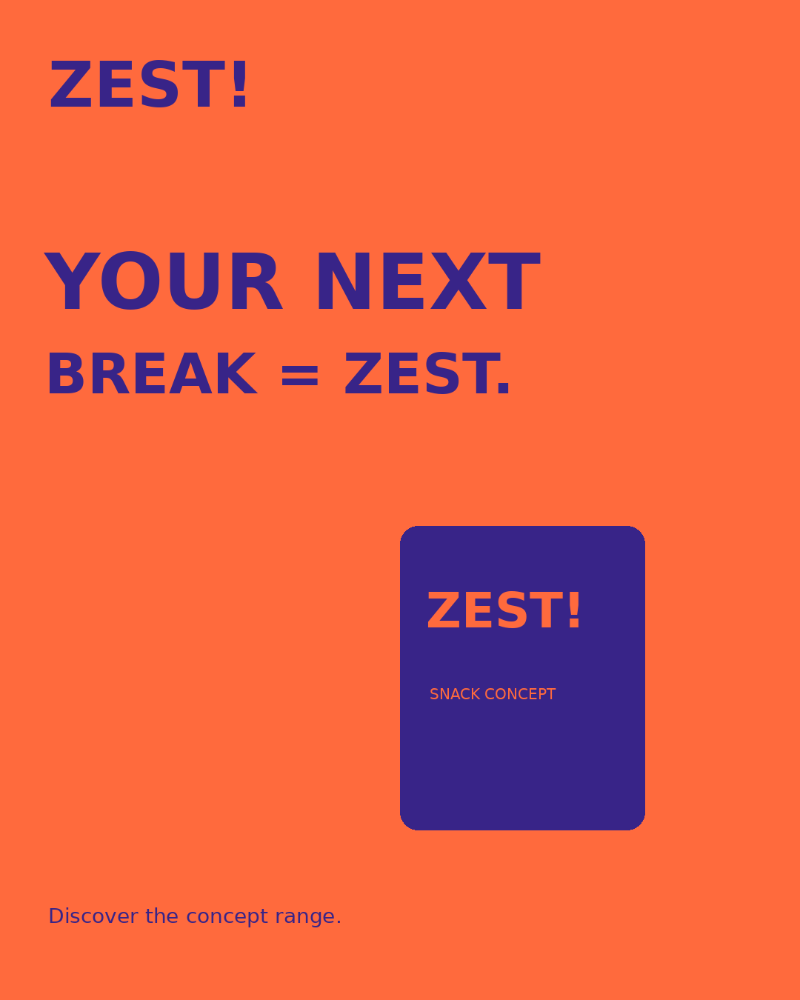
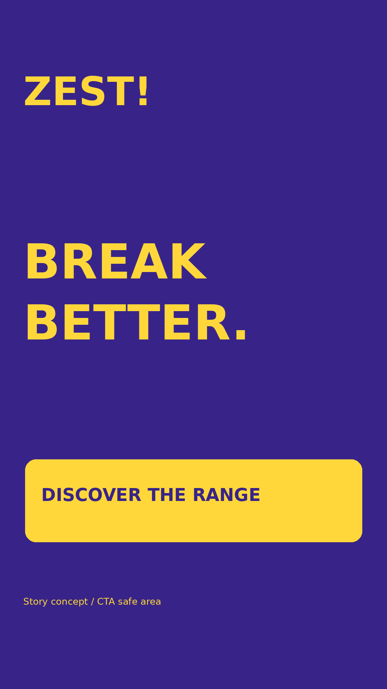

One campaign idea
Break the boring break gives each asset the same organizing idea while allowing different hooks.
A punchy snack launch system that holds together across a feed and a reel.
Download project source
Introduce a fictional snack brand through a modular launch campaign. Build recognition through repeated typography and color, then move from a familiar break-time problem toward product discovery.
Students and early-career adults encountering snack brands on mobile. Break-time relevance is a creative hypothesis requiring validation.
Break the boring break gives each asset the same organizing idea while allowing different hooks.
The first creative establishes the 3 PM problem, the second introduces the brand idea, and the third invites discovery.
Oversized type, three solid colors and one pack silhouette adapt to 4:5 feed and 9:16 story formats.
The nine-second silent reel gives each of three messages three seconds. A gentle zoom supports movement without hiding the typography.
Placement review: short occasion-led hooks keep the campaign readable on mobile. The story variant places the CTA in a lower-middle safe area. Platform-specific overlays should be checked before paid placement.
Campaign identity board, three 1080 × 1350 creatives, one 1080 × 1920 story, nine-second MP4 reel, storyboard, two-week content plan and experiment brief.




A silent typography reel: hook (0–3s), campaign idea (3–6s), discovery CTA (6–9s). A subtle zoom creates movement. This demonstrates desktop motion assembly, not filmed footage or audio editing.
Download MP4 reelInterview five target consumers about category expectations, compare five relevant brands across shelf and mobile touchpoints, and test recognition and readability at thumbnail size. Document the findings before revising the audience hypothesis.
Use a brief → concept review → production → quality review → handoff sequence. Confirm scope and approval owners, record feedback as actionable changes, and check final assets in their actual placement context.